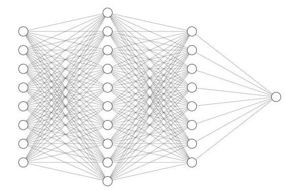
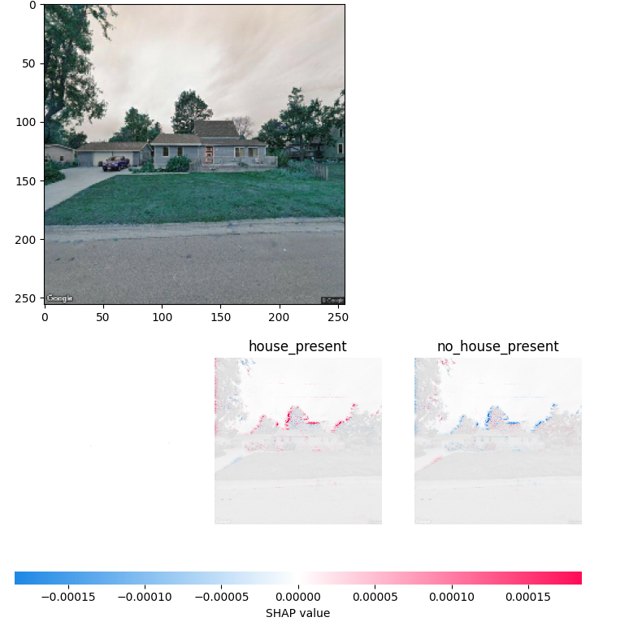
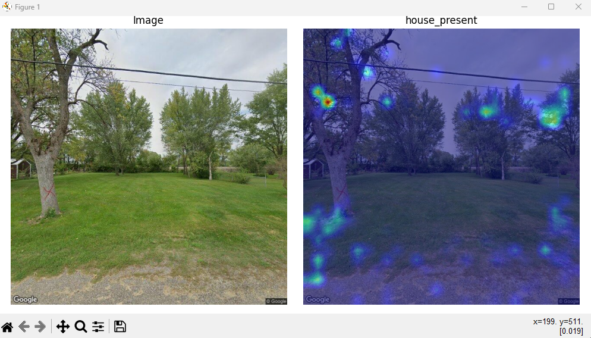

Full Guide on Housing Team’s AI
This will be a guide to a general idea of how AI works, which models we made, and the results.
How AI Works
First an intro to the general idea of how image classification artificial intelligence models work. Image classification models use deep learning to analyze and classify images into different categories. These models typically use convolutional neural networks, or CNNs, which are designed to handle visual data. Computers cannot see images the same way as us, they must look over images in multiple ways to understand them. A CNN can looks at neighborhoods of pixels to look at edges, textures, and corners to find common patterns in a set of images.

CNNs consist of multiple different layers which make up the neural network. After constructing a network we are able to ‘train’ the model on images. Our team used supervised learning to train the models, this simply means that we had pre-sorted categories for the model to learn from. A common saying is in this area is ‘garbage in, garbage out’, meaning if you feed the model bad data it will preform poorly. Sorting images for training models is a long process but it is necessary so that we can have the best output possible.
After a model is trained with data we can use it to predict which class new images are part of. For example if we train a model on images that have a picture of a house and images that have images of no house the model will predict whether a new image it has not seen before to have a house or to have no house.

Training Images
Training images are the most important factor of how well a model will perform. We cannot tune the model to be better preforming if the input images for training are poorly chosen. This is a huge issue the AI Housing team ran into this summer, there are plenty of images available online of good houses but much less of houses with damages which we are trying to evaluate. The following numbers are the ratios of images for the house present, vegetation, siding, gutter, and roof models.
430:100, 200:40:170, 210:150:100, 200:130, 260:150
Overall the ratios of images are not too bad but the total numbers are bad. For every model the smallest number is the ‘negative’ attribute whether that is a damaged gutter or damaged roof etc. Early models built during this project used about 400 images in each category just to test how models work and they predicted somewhat decent. Having less than 200 images to train on was very problematic because with only training on a couple hundred images there is no way a model can correctly predict thousands of new images from this data. This has greatly affected the model accuracy for every model we built. Future DSPG AI Housing team members need to sort many more images to increase the accuracy of models created before they can be considered reliable.
Google Colab
Google Colab is an online Jupyter Notebooks Google service. The first pilot models built for this project was done on Jupyter Labs following these videos(Video 1 Video 2). Google Colab serves the same purpose but is more user friendly to students not as familiar with code, as there is less to set up. Colab pairs with Google Drive so all data being used must be saved there first then exported if it is needed somewhere else.
Tensorflow Models
The first models we built used the Tensorflow and Keras libraries. If you are interested in seeing the program we wrote navigate here and all of the model folders have ipynb files which can be opened in Google Colab. But a short recap, we used 70% of the data for testing, 20% for validation, and 10% for testing. The training data trains the model, the validation data validates that the model is training properly and not overfitting, and the testing data is used to test how well the model preforms after being trained. Next we can look at a sample of the data to see the different buckets that we sorted the images into.
Now we must build the neural network, using a sequential model we used relu activation layers, max pooling layers, and a softmax dense layer.
After building the network you can train based on the input data. This is the siding model we are walking through which has three classes of data input, good siding, siding with chipped paint, and poor or damaged siding.
After the model is trained we can gather the accuracy and loss of the model. Accuracy is how accurate the model was at predicting classification of the testing data set while loss is the measure of how different a models predictions were from the actual labels. We want the accuracy as high as possible and loss as low as possible. Below an ideal loss and accuracy graph is shown, then the one for the siding model, then what overfitting looks like.
On a range of zero to one accuracy should be as close to one as possible while loss should be as close to zero as possible. The first image shows how these graphs should look to know you have a decent model. The second image shows what our graphs look like from the siding model. There are multiple possible issues that could be causing our graphs to look that way but the most probable reason right now is insufficient training data. Greatly increasing the training data will not perfect the accuracy and loss but this will certainly take us a step in that direction.
The third image shows another problem to watch out for once our model increases in quality. Overfitting is a phenomenon that occurs when a model becomes exceptional in the training data but cannot predict new images well. This can be avoided by increasing the data size or reducing model complexity. This is not yet a problem for any of the models used during this project but is an important concept to keep in mind for the future. Finally the model can be exported to be used for predictions.
How Did We Use These Models?
Below is an image of how our program works as a whole.

The AI Housing team built seven models for evaluating addresses (more were made this is discussed later). We made three models for image quality testing, the house present model which checks if a house is present in the image, the clear image model which checks to see if the house is obstructed, and the multiple house model which checks if multiple houses are visible.
The image quality models were made to eliminate bad images and select the best image to evaluate when given a few. Images with no houses or houses that can barely be seen due to obstruction should not be evaluated and if multiple images are available we want the image with only one house visible. After running through the first few models, if there are still multiple images remaining the program randomly selects one to evaluate.
Next are the attribute models, which we currently have four, vegetation, siding, gutter, and roof. The vegetation model determines if there is no garden, a garden present, or overgrown weeds and bushes. The siding model determines if a house has good siding, chipped paint, or damaged siding such as panels missing or cracks. The gutter model determines if a house has good gutters or damaged gutters and the roof model determines if a house has a good roof or a damaged roof. Once all these attributes are predicted by the models we return them to a csv file joined on the address that was evaluated. We also keep track of the confidence percentage of each prediction which can be used for evaluation of the models confidence vs accuracy.
SHAP Models
SHapley Additive exPlanations or SHAP is a method to explain predictions made by machine learning models. This roots from the Shapley value, which is a cooperative game theory that evaluates how important each player is for the overall cooperation and what payoff they can expect. This theory can be applied to machine learning models by looking at local accuracy, misingness, and consistency to determine what parts of input were most influential in the model making a prediction. Read more here.
The SHAP models were made in Google Colab using Tensorflow and keras just as the earlier models plus sklearn. As shown below the SHAP model is built with many more convolutional layers but as a result the loss is very low and the accuracy is very high. The following screenshots are from the house present SHAP model.
Next we show the SHAP images. What is interesting about these graphs is that the first image shows that the model is looking at the outline of the house while the second model is looking exclusively at the trees behind the house. Our best explanation is that there is not enough training data for the model to realize that it is looking for the house not the trees being partially cut off. Either way it is interesting to see graphs of which pixels of the image most greatly influence a models prediction.


We have just simply gotten these models to run properly, they are not yet implemented into any other code. The SHAP models need to be compared to our first models to see if there are accuracy differences and if one network works better than the other. Additionally this can be implemented into our program to return a folder of images for each address evaluated so that we can get an idea of what type of images need to be added to the training data.
PyTorch and CAM Models
Class Activation Mapping or CAM is another way of displaying why a model made a prediction. Similar to the SHAP method, CAM highlights important regions in an image that play a role in the models prediction making what looks like a heatmap. Read more here.
The first model we built for CAM used keras and ResNet50. To read more on ResNet go here. Residual Networks or ResNet are Deep Learning networks that basically allow skipping of convolutional layers if they harm the models accuracy. The first model also used ImageNet which is a dataset with millions of images used for training and evaluation computer vision models. So this model was a test of what was possible with using a prebuilt model and a large dataset. We randomly decided to choose panda images as a test to see how the program performed.

This had us very excited to use our own model and dataset to try and get the same result as the image above. Quickly it was discovered that the upwards of fifty layers in resnet could not be easily replaced by our eight layer models. So we decided to try and learn PyTorch (an alternative library to Tensorflow).
The torch library has many different functions than Tensorflow and the neural networks are constructed a little differently. Thanks to courses on DataCamp we were able to figure out how to use PyTorch and get some good results.
The second model built was a house presence model. We put this code in a python file instead of a jupyter notebooks file like what is produced in Google Colab just to test out the difference. The process of using our own training data and producing CAM images was a surprisingly quick process with minor hiccups.




Above is the progression of the house present CAM model. At first the heat bubbles showed up in what seemed to be random locations but what was a mystery is that they were the same in all test images. It turned out that the program was overriding the variable keeping track of what the model was doing for the prediction rather than making copies of the information.
After this was fixed, the model started to show certain areas that it was looking at to make it’s prediction. We were not satisfied with the images because they still seemed to be random. At this point we had 400 images of houses and only 40 images of no house present so we spent time to almost double the amount of images with no house present to improve the model. After rerunning the program more heat spots were visible and seemed a little less random.
Note two things, first it seems this model likes to look at the trees for it’s prediction just as the SHAP model and after more data was added the left image was correctly predicted no house present.
However we were still not satisfied this being the last week there needs to be more to show that this program works than random blotches. So we took the model and replaced the data with 200 images of cats and dogs to see if the model was really working properly.


Above you can see the first image looks at the nose and some of the fur. We doubled the training data which resulted in the second image which has more red around one of the eyes. Going back to the panda image earlier, the more accurate the model is the more red we will see around the object that it identifies. This last cat image is so exciting to see because unlike the house images that seem to be random blotches, most of the color is concentrated on the cat’s face.
Conclusion
Overall messing around with AI is pretty interesting, the worst part is definitely sorting training images for your models, but once you have a training set it’s fun. To reiterate it is much easier to go look at the code for the AI models to see what is happening. We got the models to predict correctly about 80% of the time and wish next years housing team luck on improving these models further.